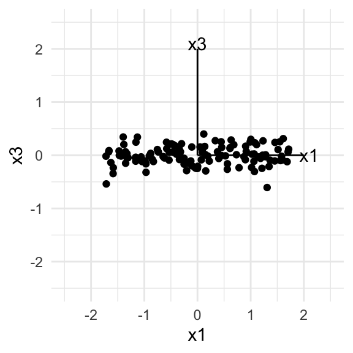
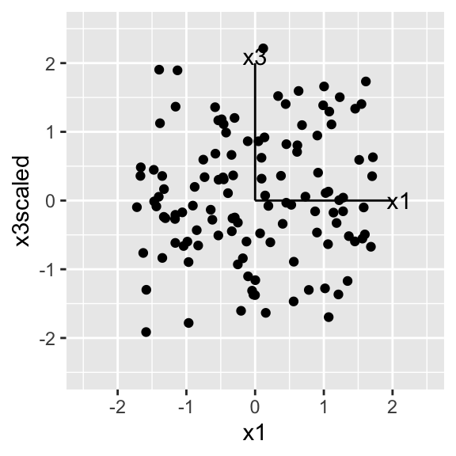
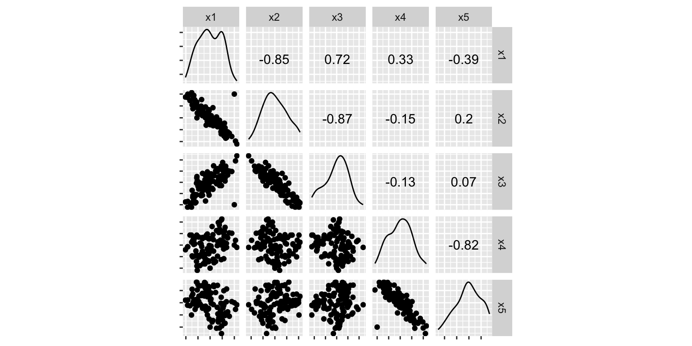

This chapter will focus on methods for reducing dimension, and how the tour can be used to assist with the common methods such as principal component analysis (PCA), multidimensional scaling (MDS), t-stochastic neighbour embedding (t-SNE), and factor analysis.
Dimension is perceived in a tour using the spread of points. When the points are spread far apart, then the data is filling the space. Conversely when the points “collapse” into a sub-region then the data is only partially filling the space, and some dimension reduction to reduce to this smaller dimensional space may be worthwhile.
Let’s start with some 2D examples. You need at least two variables to be able to talk about association between variables. Figure 2.1 shows three plots of two variables. Plot (a) shows two variables that are strongly linearly associated1, because when x1 is low, x2 is low also, and conversely when x1 is high, x2 is also high. This can also be seen by the reducton in spread of points (or “collapse”) in one direction making the data fill less than the full square of the plot. So from this we can conclude that the data is not fully 2D. The second step is to infer which variables contribute to this reduction in dimension. The axes for x1 and x2 are drawn extending from \((0,0)\) and because they both extend out of the cloud of points, in the direction away from the collapse of points we can say that they are jointly responsible for the dimension reduction.
Figure 2.1 (b) shows a pair of variables that are not linearly associated. Variable x1 is more varied than x3 but knowing the value on x1 tells us nothing about possible values on x3. Before running a tour all variables are typically scaled to have equal spread. The purpose of the tour is to capture association and relationships between the variables, so any univariate differences should be removed ahead of time. Figure 2.1 (c) shows what this would look like when x3 is scaled - the points are fully spread in the full square of the plot.
(a) Two variables with strong linear association. Both variables contribute to the association, as indicated by their axes extending out from the “collapsed” direction of the points.

(b) Two variables with no linear association. But x3 has less variation, so points collapse in this direction.

(c) The situation in plot (b) does not arise in a tour because all variables are (usually) scaled.
Figure 2.1: Explanation of how dimension reduction is perceived in 2D, relative to variables. When an axes extends out of a direction where the points are collapsed, it means that this variable is partially responsible for the reduced dimension.
Now let’s think about what this looks like with five variables. Figure 2.2 shows a grand tour on five variables, with (a) showing data that is primarily 2D, (b) has data that is primarily 3D and (c) is fully 5D. You can see that both (a) and (b) the spread of points collapse in some projections, with it happening more in (a). In (c) the data is always spread out in the square, although it does seem to concentrate or pile in the centre. This piling is typical when projecting from high dimensions to low dimensions. The sage tour (Laa, Cook, and Valencia 2020) makes a correction for this.
Figure 2.2: Different dimensional planes - 2D, 3D, 5D - displayed in a grand tour projecting into 2D. Notice that the 5D in 5D always fills out the box (although it does concentrate some in the middle which is typical when projecting from high to low dimensions). Also you can see that the 2D in 5D, concentrates into a line more than the 3D in 5D. This suggests that it is lower dimensional.
The next step is to determine which variables contribute. In the examples just provided, all variables are linearly associated in the 2D and 2D data. You can check this by making a scatterplot matrix.
Figure 2.3: Scatterplot matrix of plane data. You can see that x1-x3 are strongly linearly associated, and also x4 and x5. When you watch the tour of this data, any time the data collapses into a line you should see only (x1, x2, x3) or (x4, x5). When combinations of x1 and x4 or x5 show, the data should be spread out.
To make an example where not all variables contribute, we have added two additional variables to the plane data set, which are purely noise.
# Add two pure noise dimensions to the planeplane_noise <- planeplane_noise$x6 <-rnorm(100)plane_noise$x7 <-rnorm(100)ggduo(plane_noise, columnsX =1:5, columnsY =6:7, types =list(continuous ="points")) +theme(aspect.ratio=1, axis.text =element_blank())
Figure 2.4: Additional noise variables are not associated with any of the first five variables.
Now we have 2D structure in 7D, but only five of the variables contribute to the 2D structure, that is, five of the variables are linearly related with each other. The other two variables (x6, x7) are not linearly related to any of the others.
We can still see the concentration of points along a line in some dimensions, which tells us that the data is not fully 7D. Then if you look closely at the variable axes you will see that the collapsing to a line only occurs when any of x1-x5 contribute strongly in the direction orthogonal to this. This does not happen when x6 or x7 contribute strongly to a projection - the data is always expanded to fill much of the space. That tells us that x6 and x7 don’t substantially contribute to the dimension reduction, that is, they are not linearly related to the other variables.
Figure 2.5: Grand tour of the plane with two additional dimensions of pure noise. The collapsing of the points indicates that this is not fully 7D. This only happens when any of x1-x5 are contributing strongly (frame 49 x4, x5; frame 79 x1; frame 115 x2, x3). If x6 or x7 are contributing strongly the data is spread out fully. This tells us that x6 and x7 are not linearly associated, but other variables are.
The simulated data here is very simple, and what we have learned from the tour could also be learned from principal component analysis. However, if there are small complications, such as outliers or nonlinear relationships, that might not be visible from principal component analysis, the tour can help you to see them.
Here’s an example with an outlier.
Code
# Add several outliers to the plane_noise dataplane_noise_outliers <- plane_noiseplane_noise_outliers[101,] <-c(2, 2, -2, 0, 0, 0, 0)plane_noise_outliers[102,] <-c(0, 0, 0,-2, -2, 0, 0)ggscatmat(plane_noise_outliers, columns =1:5) +theme(aspect.ratio=1, axis.text =element_blank())

Figure 2.6: Outliers added to the plane with noise data.
Non-linear relationship between several variables, primarily x3.
Figure 2.7: Examples of different types of dimensionality issues: outliers and nonlinearity. In the left plot, you can see two points far from the others in some projections. Also the two can be seen with different movement patterns, moving faster that other points during the tour. Outliers will affect detection of reduced dimension, but it is easy to ignore with the tour. Non-linear relationships may not be captured by other techniques but are visible with the tour.
Laa, Ursula, Dianne Cook, and German Valencia. 2020. “A Slice Tour for Finding Hollowness in High-Dimensional Data.”Journal of Computational and Graphical Statistics 29 (3): 681–87. https://doi.org/10.1080/10618600.2020.1777140.
It is generally better to use “associated” than “correlated”. Correlated is a statistical quantity, measuring linear association. The term “associated” can be prefaced with the type of association, such as “linear” or “non-linear”.↩︎